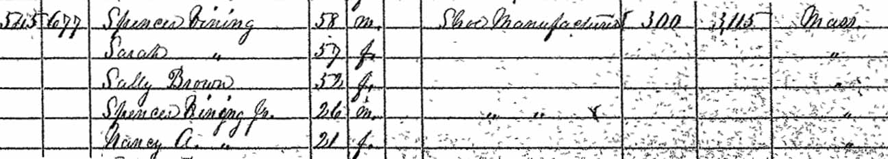
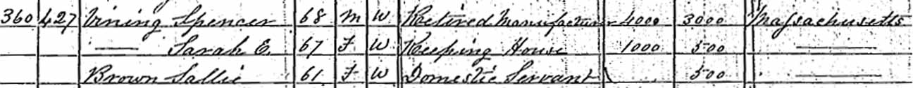

Census Data
| 1830 | 1840 | 1850 | 1860 | 1870 | 1880 | |
| Spencer Vining | ? | ? | ? | 58 | 68 | ? |
| Sarah E. (Porter) Vining | ? | ? | ? | 57 | 67 | ? |
| William Reed Vining | ? | ? | married and living in separate household | |||
| Sarah Porter Vining | dead | |||||
| Spencer Vining Jr. | ? | ? | 26 [see note below] |

